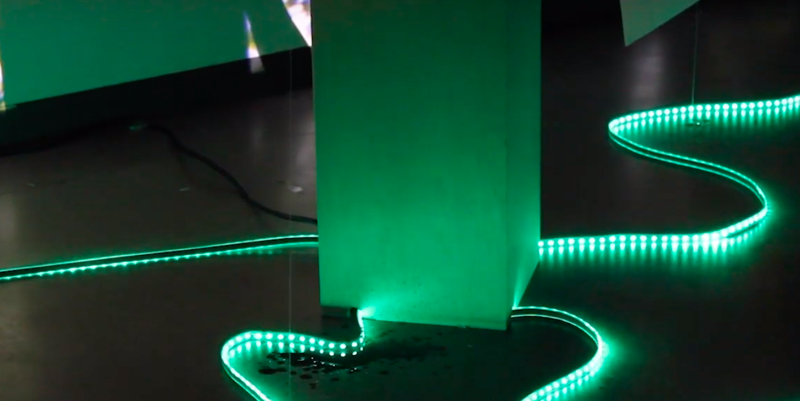

Equilibria
In 1971, the American environmentalist Barry Commoner released his seminal work The Closing Circle: Nature, Man, and Technology in which he laid out his four laws of ecology, contributing to the global consciousness the now well-known adage: “Everything is connected to everything else.” In the decades since, people all over the world have grown to understand the concept of living in a closed ecosystem—at least in theory. As a result of the unrelenting demand for new material goods and global economic growth, environmental degradation has continued unabated. Our technological dependence carries with it an invisible cost which, while easy to ignore, takes its toll on the lives of the most vulnerable people worldwide. Equilibria is a dialogue between an ecosystem in peril and the viewer. As visitors interact with an interactive sculpture, they are forced to confront the reality that their consumption ultimately leads to the system’s destruction. This realization prompts viewers to consider how best to conserve the experience for future visitors, who serve as a proxy for future generations. Equilibria invites viewers to think about their place within the global ecosystem and hopes to develop an awareness of their own finite reality.
Upon entering the space, the viewer is confronted with translucent paper panels attached to fishing wire and suspended from the ceiling. Simulated leaves are projected on these panels. Their purpose is to immerse the viewer in a simulated forest. As the viewer moves around the forest, its vitality is visibly affected by their presence. This effect is manifested in how verdant or dried the leaves become in the immediate area around the viewer. If a viewer lingers too long around one spot, its foliage will begin to wither. This is an indication that the ecosystem is losing its balance. At the center of the forest is the interactive sculpture. This structure is in the form of a triangular column, about three feet high, and made of wood. Upon the column, sits a clear, triangular reservoir filled about 90% with water. It is lit from below, which emits an otherworldly, pristine glow from the clear water. Above this container, at about seven feet, is a suspended spherical container that is filled with black ink. The black ink dispenser contains a small pump that is electronically controlled to release small amounts of ink to taint the water when the ecosystem falls out of equilibrium. After the black ink jet strikes the water, and slowly disperses in the reservoir, the system returns to equilibrium and the foliage of the forest comes back to life. This balancing effect, however, is temporary since the reservoir of water can only hold so much liquid before it overflows. If too many viewers upset the system, it will become overly polluted and unable to restore its own balance. At that point, the forest will die and the ecosystem will shut down as the sculpture overflows.
Collaboration with Allan Pichardo, Nicolas Prudhomme, Dylan Hancock and Emily Wu